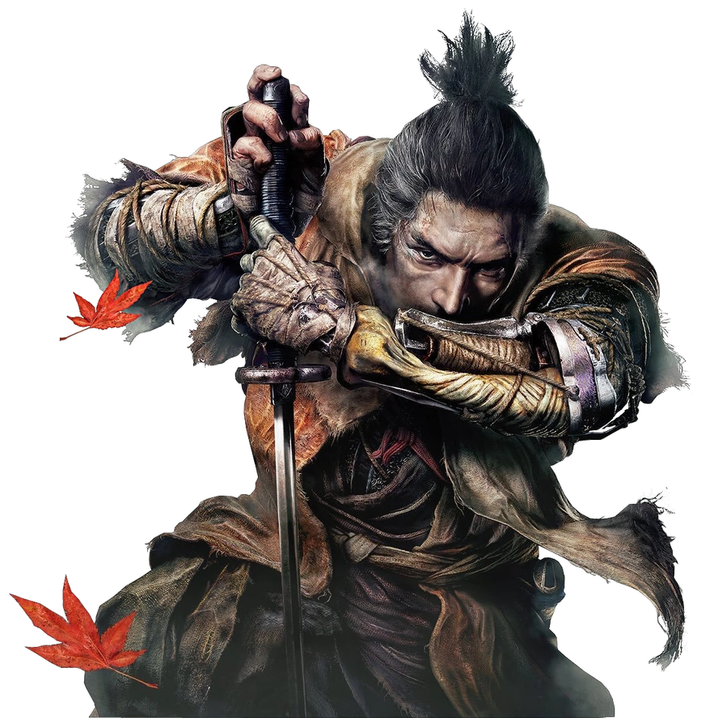
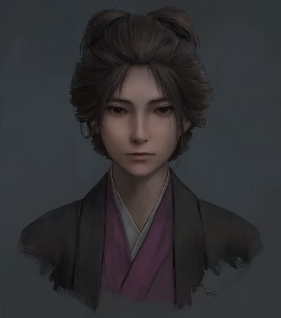

Purchase
TAKE REVENGE. RESTORE YOUR HONOR. KILL INGENIOUSLY
Sekiro: Shadows Die Twice is a 2019 action-adventure game developed by FromSoftware and published by Activision. The game follows a shinobi known as Wolf as he attempts to take revenge on a samurai clan who attacked him and kidnapped his lord. It was released for Microsoft Windows, PlayStation 4, and Xbox One in March 2019 and for Stadia in October 2020.
In Sekiro: Shadows Die Twice you are the “one-armed wolf”, a disgraced and disfigured warrior rescued from the brink of death. Bound to protect a young lord who is the descendant of an ancient bloodline, you become the target of many vicious enemies, including the dangerous Ashina clan. When the young lord is captured, nothing will stop you on a perilous quest to regain your honor, not even death itself.
Explore late 1500s Sengoku Japan, a brutal period of constant life and death conflict, as you come face to face with larger than life foes in a dark and twisted world. Unleash an arsenal of deadly prosthetic tools and powerful ninja abilities while you blend stealth, vertical traversal, and visceral head to head combat in a bloody confrontation.

Sekiro
Sekiro, also known as Wolf, or Ookami, is the eponymous protagonist of Sekiro: Shadows Die Twice. He is a Shinobi serving the Divine Heir, Kuro. Bound by honour, he is composed and reticent, but also has the ruthlessness to complete his mission by any means necessary.
Read More

Emma
Emma is a doctor, who was tasked by her master, Isshin Ashina, with helping Wolf in his quest to rescue Kuro from Genichiro.
When she was just a child, the Sculptor, at that time the shinobi known as Orangutan, saved her from a battlefield and let his dear friend, lord Dogen, adopt her. Wishing to repay his master, she started studying medicine from a young age and became a skilled doctor.
Read More

Sculptor
The Sculptor is the hermit who inhabits the Dilapidated Temple, where he passes his days carving Buddha Statues. He rescued Wolf after his defeat at the hand of Genichiro and gifted him a Prosthetic Arm to replace the one he lost.
Read More
Stephen Rice
I was definitely sure it would be a great game. From Software never fails. I took a few hours to play and that's what I expected. I am in heaven ! Everything is amazing.
Great atmosphere, graphics and story. You can fell the soul of previous games. I was really missing this world a lot. Finally got it.
Thank you FromSoftware once again ! You're the best in the world
Mary Reid
A lot of people dislike Sekiro due to its difficulty but to me at least thats just the fun of the game learning the moves and creating a counter attack for them (most bosses have weaknesses to exploit) and thats the only real point of criticism the game, story and everything are so good
Lois James
It was my first game fromsofware I enjoyed it a lot even when I probably died more than a 800 times. There were so places where the difficulty was unfair as they just added more enemies to a boss battle, but the rest was fair. That is if you hone your skill I beta all the bosses And I am proud to say I beat the game